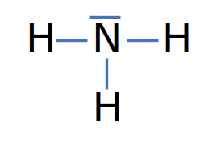
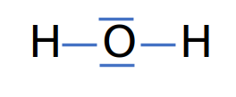

Terminale Générale
Spécialité Physique – Chimie
2020-2021
Aspect lacunaire
Problême :
Quel volume occuperait les noyaux des atomes de tous les être humains ?
| Atome | Z | A | % * |
| Hydrogène | 1 | 1 | 10% |
| Carbone | 6 | 12 | 20% |
| Azote | 7 | 14 | 3% |
| Oxygène | 8 | 16 | 67% |
Données :
- Population mondiale en décembre 2020 : 7 791 949 500
-
Masse moyenne d'un être humain adulte : 62 kg
(lien vers l'étude) - Masse d'un nucléon : $1,67\times 10^{-27}\ kg $
- Volume d'une sphère de rayon R : $V=\dfrac{4}{3}\pi R^3$
- Rayon moyen d'un noyau d'atome : $R=3,00\times 10^{-15}\ m$
La sérotonine
La sérotonine est impliquée dans la gestion des humeurs et est associée à l'état de bonheur lorqu'elle est à un taux équilibrén, réduisant la prise de risque et en poussant ainsi l'individu à maintenir une situation qui lui est favorable.
D'après "Sérotonine", wikipedia.fr (lien vers l'article)
Les quatres atomes présents dans la molécule de sérotonine sont les atomes de carbone, d'hydrogène et d'azote.

Combien de liaisons formes l'atomes d'azote ?
Données :
- Symboles chimiques : $_1 H$ | $_8 O$ | $_6 C$
-
Formule de Lewis de la molécule d'eau :
